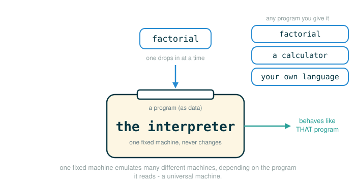

3.5.3 Data as Programs and Universal Machines
In the last two lessons you built the machinery of an interpreter: an evaluator that reads expressions, an applicator that runs procedures, and environments that remember names. This lesson steps back and asks a single strange-sounding question: what kind of thing is a program, really?
By the end you will be able to do four things. You will explain why a program can be understood as a description of a machine rather than the machine itself. You will explain why the Scheme interpreter deserves the name universal machine. You will separate the three layers that a single expression like (+ 2 2) passes through inside an interpreter: text, data, and execution. And you will read the Python tools eval and exec, which let a running program turn data back into computation.
The whole lesson rests on one sentence, and we will earn it slowly: the Scheme interpreter is written in Python, so a Scheme program is data for a Python program.
A Blueprint Is Not the Building
Picture a paper blueprint for a machine. The blueprint is not the machine. You cannot pour water through a drawing of a pump. The blueprint is a description of a machine, written in lines and labels, and it does nothing on its own — just as a class was a blueprint for objects in Chapter 2, a program is a blueprint for a process.
To get a working machine, you hand the blueprint to a builder. The builder reads the description, follows it part by part, and assembles something that actually runs. Two different things are in play: the description, and the agent that brings the description to life.
Interpretation has exactly this shape:
program text -> description of a machine
interpreter -> builder that follows the descriptionWhen you write a Scheme program, the interpreter does not treat it as a command it was born already knowing. It treats your program as data: something to read, inspect, and follow. The interpreter reads the program, analyzes its structure, and then performs the computation that the structure describes. The program is the blueprint; the interpreter is the builder.
Programs Describe Abstract Machines
Take a concrete example. Here is a Scheme program that the official text uses:
(define (factorial n)
(if (= n 0) 1 (* n (factorial (- n 1)))))Read this as a blueprint. It does not, by itself, multiply anything. It describes a machine for computing factorials, and it spells out the machine's parts: a test for whether n is 0, a value to hand back in that base case, a multiplication, and a smaller copy of the same machine for the recursive call.
Walk the tokens of the inner line, the one that does the real work, and read what each part contributes to the description:
(if (= n 0) 1 (* n (factorial (- n 1))))
├─ if .................. choose between two results based on a test
├─ (= n 0) ............. the test: is the input n equal to 0?
├─ 1 .................. the result when the test is true (the base case)
├─ (* n ...) .......... the result when the test is false
├─ (factorial (- n 1)) . a smaller factorial machine, run on n minus 1
└─ describes ........... a machine that stops at 0, else multiplies n by factorial(n - 1)The same machine can be described in Python. The official text gives this version, which uses a conditional expression:
# (1)
def factorial(n):
return 1 if n == 1 else n * factorial(n - 1)
This is the official Python comparison, reproduced exactly. Walk the tokens of its body so you can see the same four parts you saw in Scheme:
return 1 if n == 1 else n * factorial(n - 1)
├─ return .............. hand back the value of the expression that follows
├─ 1 .................. the result when the test is true (the base case)
├─ if n == 1 .......... the test: is the input n equal to 1?
├─ else ............... introduces the result used when the test is false
├─ n * factorial(n - 1) . multiply n by a smaller factorial machine
└─ describes ........... a machine that stops at 1, else multiplies n by factorial(n - 1)One detail is worth pausing on, because a careful reader will notice it. The Scheme version stops when n is 0; the Python version stops when n is 1. Both are correct descriptions of factorial for positive inputs, because and , so the two base cases agree. The shared machine idea is what matters: test for a stopping value, otherwise decrement, recursively compute, and multiply.
A Machine That Contains a Smaller Copy of Itself
The recursive part is easy to say and easy to miss. The factorial machine contains, inside it, another factorial machine. To compute factorial(5), the machine must first run a factorial(4) machine, which must run a factorial(3) machine, and so on:
factorial(5) needs factorial(4)
factorial(4) needs factorial(3)
factorial(3) needs factorial(2)
factorial(2) needs factorial(1)This is why the official text describes the factorial machine as containing another factorial machine inside it. The blueprint refers to itself, so the builder ends up assembling a stack of smaller and smaller copies until it reaches the stopping value, then multiplies its way back up.
It can help to picture the parts wired together as a flow:
input n
|
test: is n at the stopping value?
| yes -> output 1
|
no
|
compute factorial(n - 1)
|
multiply by n
|
output resultThe Interpreter as a Universal Machine
Now the key move. A machine that only computes factorial is a special-purpose machine. But the Scheme interpreter is not like that. It does not compute one fixed thing. It takes, as input, a description of a machine, and then it configures itself to behave like the machine described.
The figure below shows one interpreter reconfiguring itself to act like whichever program description it is handed.

Hand it a program that describes factorial, and the interpreter behaves like a factorial machine. Hand it a program that describes a list-processing procedure, and the very same interpreter behaves like that list-processing machine. Nothing about the interpreter changed; only its input did.
This is why the official text calls the Scheme interpreter a universal machine. It is universal in the precise sense that it can emulate many different machines, as long as each machine is described to it as a Scheme program. The interpreter is a builder that will build whatever blueprint you give it.
The bridge from your point of view to the interpreter's runs in one direction:
Scheme program as user language
|
v
Scheme program as interpreter data
|
v
Python interpreter manipulates the data by fixed rulesThe same text wears two hats at once. From your perspective:
(+ 2 2)is a Scheme expression you intend to evaluate. From the interpreter's perspective, it is a piece of structured data to inspect:
Pair('+', Pair(2, Pair(2, nil)))Both views are correct at the same time. The difference is not the bytes on the page; it is the point of view. To you it is code. To the interpreter it is data that happens to describe code.
Three Layers for One Expression
The single most useful idea in this lesson is learning to separate three layers that look almost identical on the page. They are easy to blur together precisely because the same expression appears in all three. Use (+ 2 2) again and pull the layers apart.
Layer 1 is text. The program is nothing but characters:
"(+ 2 2)"Characters do not add numbers. They sit in a file, a terminal, or a string, completely inert.
Layer 2 is data. The reader has parsed the text into a structure that records the operator and the operands:
Pair('+', Pair(2, Pair(2, nil)))This structure still has not computed anything. It knows the shape of the expression, but no addition has happened yet.
Layer 3 is execution. The evaluator walks that data structure and follows the evaluation rules from the previous lessons:
scheme_eval sees operator +
scheme_eval evaluates operands 2 and 2
scheme_apply applies + to 2 and 2
result is 4This is why "programs as data" is more than a slogan. The interpreter literally receives a data structure that stands for your program, and then it follows fixed rules to turn that structure into a computation. Text becomes data becomes a value, and an interpreter is the thing that carries it across each boundary.
Data Can Become Code on Purpose
So far the boundary between data and code has been crossed by the interpreter behind the scenes. Some languages also let a running program cross that boundary on purpose, by handing a piece of data to an evaluator and saying "treat this as code now."
In Scheme, this appears through a facility the official text refers to as the run procedure: a program can build a Scheme expression as data and then ask the interpreter to run it. Python has two related tools, and the official text names both:
evalevaluates a Python expression and returns its value.execexecutes a Python statement for its effect.
The official text contrasts two short lines. Asking Python to evaluate the string '2+2' gives the same answer as writing the expression directly:
>>> eval('2+2')
4
>>> 2+2
4The two lines reach the same value by different routes. The first hands eval a string — pure data, a sequence of characters — and eval interprets those characters as a Python expression and computes 4. The second is already Python code, evaluated directly with no string in sight. The difference is the starting layer: one begins as data and is lifted into execution, the other begins as code.
Walk the tokens of the eval call so the layer-crossing is explicit:
eval('2+2')
├─ eval ............... the function that evaluates a string as a Python expression
├─ ( .................. begins the input
├─ '2+2' ............. a string: four characters of data, not yet code
├─ ) .................. ends the input
└─ evaluates to ....... 4The load-bearing token is '2+2'. With the quotes, it is data. The call to eval is what gives that data the meaning of code.
The Boundary Between Text, Data, and Execution
It is worth stating the boundary plainly, because beginners often assume that text which looks like code is already running. It is not.
text -> characters such as 2+2
data -> a string object containing those characters
execution -> an interpreter evaluates the expressionThe boundary matters because text does nothing by itself. This:
"2+2"is only a string sitting in memory. This:
eval("2+2")asks Python to interpret that string as an expression and compute its value. The string did not change. What changed is that you handed it to an interpreter, and the interpreter is what supplies meaning.
A Runnable Bridge: eval for an Expression
You can run the official idea yourself. Python's eval takes a string holding a single expression and returns the value of that expression. Here is the smallest version, written to be pasted and run:
# (2)
print(eval("2 + 2"))
Expected output:
4The string "2 + 2" is data right up until print(eval("2 + 2")) runs. Inside the call, eval reads those characters, evaluates them as a Python expression, and produces the value 4, which print then displays.
A Runnable Bridge: exec for a Statement
eval handles expressions, which produce values. Statements — assignments, definitions, loops — do not produce a value; they carry out an action. For those, Python provides exec. You give exec a string of statements and, optionally, a namespace dictionary for it to write names into:
# (3)
program_text = "x = 10\ny = x + 5"
namespace = {}
exec(program_text, namespace)
print(namespace["y"])
Expected output:
15Walk the tokens of the line that does the work:
exec(program_text, namespace)
├─ exec ............... the function that executes a string as Python statements
├─ ( .................. begins the inputs
├─ program_text ...... a string holding two assignment statements
├─ , .................. separates the inputs
├─ namespace ......... the dictionary the statements will write their names into
├─ ) .................. ends the inputs
└─ performs .......... runs the statements, binding x to 10 and y to 15 in namespaceBefore exec runs, program_text is just a string; the characters x = 10 have not assigned anything. After exec runs, the namespace dictionary holds the bindings the statements created, so namespace["y"] is 15. This is the same text-to-data-to-execution journey as before, except your own program chose when to make the crossing.
Why This Power Requires Care
Turning data into code is powerful: a program can assemble a brand-new expression as a string and then run it. That is the same power the interpreter uses internally, now exposed to ordinary code.
It is also genuinely risky. If the string comes from an untrusted source, evaluating it can run instructions you never intended to run, with all the authority of your program. For this course, the takeaway is not "reach for eval often." The takeaway is conceptual: an interpreter is the bridge between data and computation, and eval and exec are the moments where that bridge is crossed deliberately. Knowing the bridge exists is what matters here.
⚠Common Beginner Traps
Trap 1: Thinking a program's text is already running. Text is inert. A string of characters, however much it looks like code, computes nothing until an interpreter or compiler gives it meaning.
Trap 2: Thinking "program as data" is only a metaphor. It is literal. Inside the interpreter, your program is represented as real data structures — nested pairs — that the evaluator inspects.
Trap 3: Confusing your perspective with the interpreter's. You read (+ 2 2) as code. The interpreter holds it as Pair('+', Pair(2, Pair(2, nil))), a structured object to process. Both are true at once.
Trap 4: Thinking "universal" means "magical." A universal machine still follows fixed rules. Its power is not magic; it comes entirely from being able to accept descriptions of many different machines.
Trap 5: Treating eval and exec as everyday beginner tools. They exist here to demonstrate that data can become code. Because they can execute arbitrary text, they should be used with real caution, not reached for casually.
✓Check Your Understanding
- Why can a program be described as a machine, when a program is just text?
- What smaller parts does the factorial machine contain?
- Why is a Scheme interpreter called a universal machine?
- From the interpreter's perspective, what is
(+ 2 2)? - A program runs
namespace = {}and thenexec("a = 6\nb = a * 2", namespace). What value doesnamespace["b"]hold afterward? - Why should evaluating data as code be treated with care?
- What are the three layers that
(+ 2 2)passes through inside an interpreter?
Show the answers
- A program is a description of a process that a machine can carry out step by step; the text is the blueprint, and an interpreter is the builder that follows it.
- A test for the base case, a value for that base case, a multiplication step, and a smaller factorial machine for the recursive call.
- Because it can emulate many different machines: given a program describing any machine, the interpreter configures itself to behave like that machine.
- Structured input data, represented as nested pairs, that the interpreter can evaluate.
12. The string is inert untilexecruns it;execthen executes both statements innamespace, bindingato6andbtoa * 2, sonamespace["b"]is12.- Code evaluation can run arbitrary instructions, so applying it to untrusted text can run code you did not intend.
- First it is text (characters), then data (a pair-structured object from the reader), then execution (the evaluator turns that data into the value
4).
§Summary
A program is best understood as a description of an abstract machine, not the machine itself. The text is a blueprint; an interpreter is the builder that reads the blueprint and carries it out. The Scheme interpreter is a universal machine because it can read any Scheme program as data and then emulate the machine that program describes — factorial, list processing, anything you can write. This is why "programs as data" is literal: a single expression like (+ 2 2) lives as text, then as the data Pair('+', Pair(2, Pair(2, nil))), then as execution. The Python tools eval and exec expose the data-to-code crossing directly, which makes them powerful and, with untrusted input, risky.
This closes Chapter 3's story about meaning. Source text becomes computation only because an interpreter reads structure, follows evaluation rules, manages environments, and applies procedures. Chapter 4 keeps that machine-model discipline but changes the scale: instead of asking how one expression gets its meaning, it asks how programs process many values — streams, tables, logic facts, and more.
▶Step-Through Checkpoint
The block below crosses the data-to-code boundary twice, once with eval and once with exec. Stepping through it draws the environment diagram of that crossing. First, expression_text and still_data both point at the same inert string object, until eval turns those characters into the number 4. Then exec writes answer into the separate namespace dictionary you handed it rather than into the global frame, so the diagram briefly shows two distinct binding tables until the final line copies answer back out. Before you step through it, write down three predictions: whether still_data holds a number or a string after line two, where the name answer first appears — in the namespace dictionary or in the global frame — and what number the last line binds to answer.
# (4)
expression_text = "2 + 2"
still_data = expression_text
computed_value = eval(expression_text)
program_text = "answer = computed_value * 3"
namespace = {"computed_value": computed_value}
exec(program_text, namespace)
answer = namespace["answer"]
Step through it one line at a time and check each prediction as the bindings appear. still_data holds the string "2 + 2", not a number: copying text does not evaluate it; only the eval call turns those characters into 4. The name answer appears first as a key in namespace, written there by exec; only the last line binds 12 to answer in the global frame. The characters stayed inert until an evaluator gave them meaning.